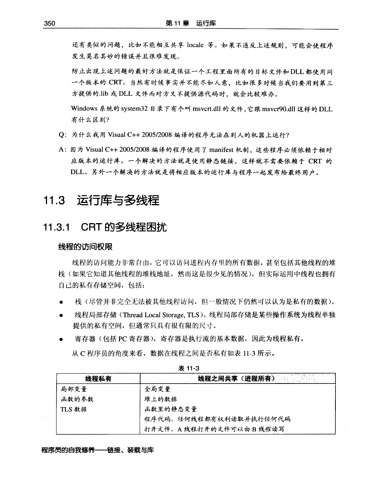
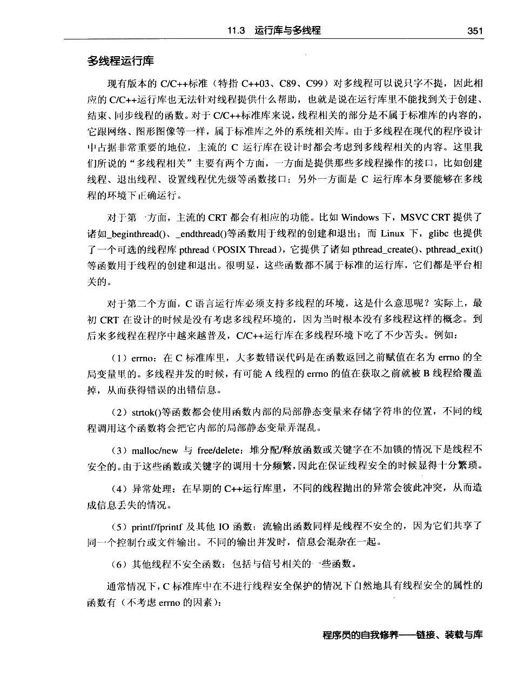
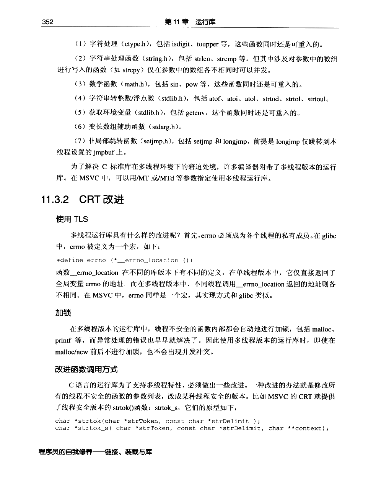
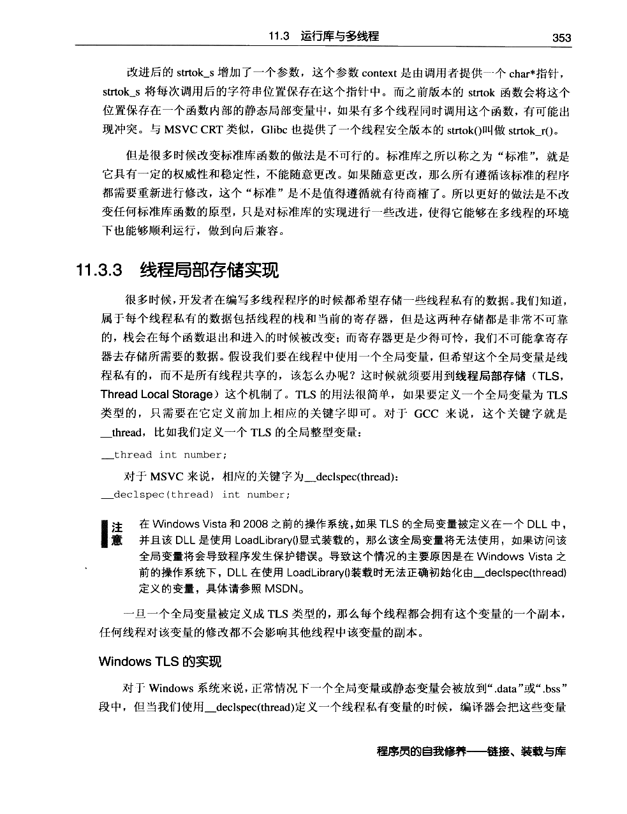
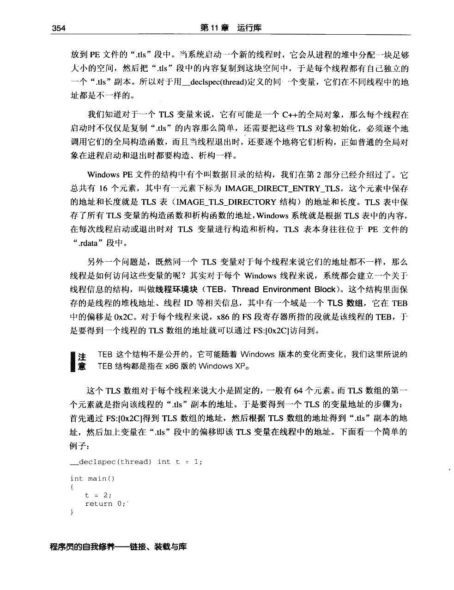
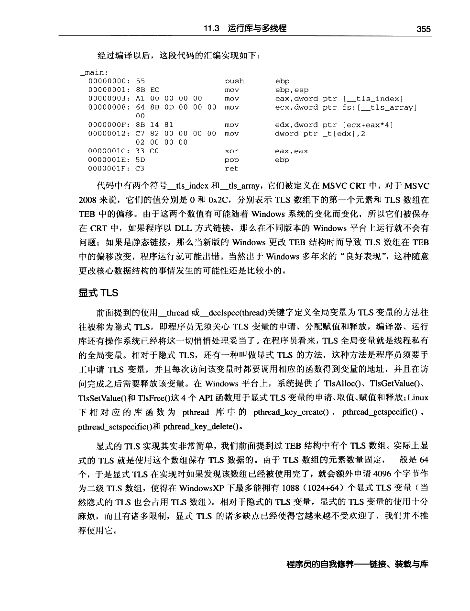
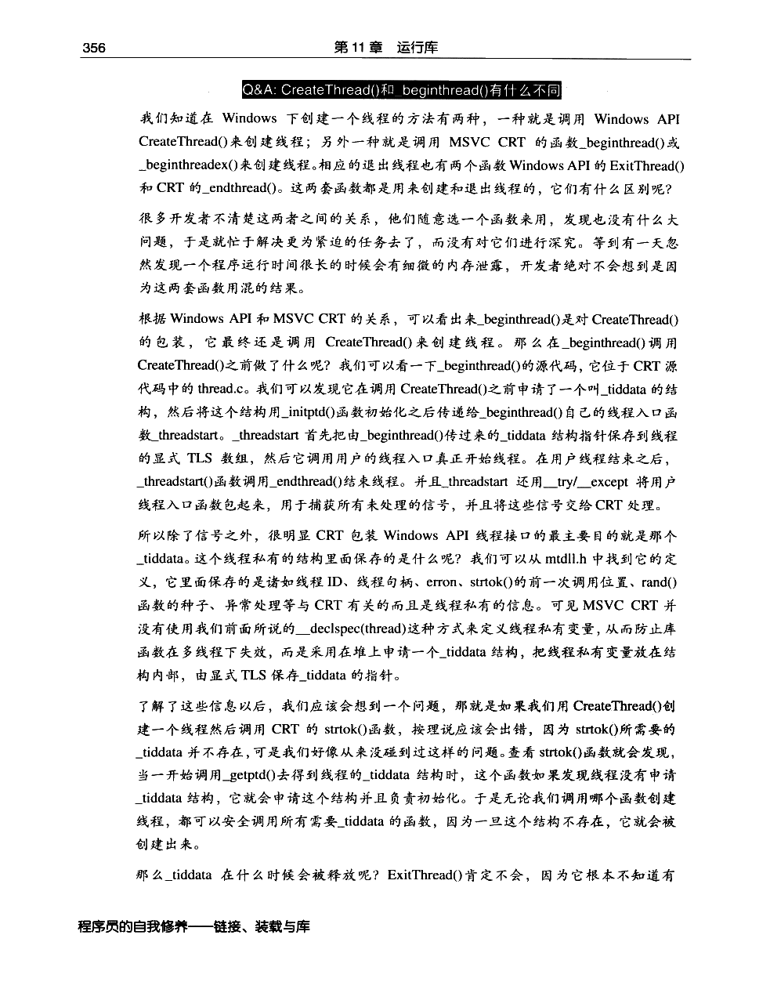

← 返回正文11.3 运行库与多线程
PDF 第 373 页 · 书内第 350 页
PDF 第 374 页 · 书内第 351 页
PDF 第 375 页 · 书内第 352 页
PDF 第 376 页 · 书内第 353 页
PDF 第 377 页 · 书内第 354 页
PDF 第 378 页 · 书内第 355 页
PDF 第 379 页 · 书内第 356 页
PDF 第 380 页 · 书内第 357 页